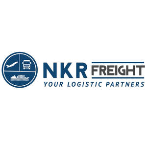

Trade Mark Journal No.2025/021 23 May 2025
UK00004200451 8 May 2025 (35,39)

- Class 35
- Business consultancy, in the field of transport and delivery.
- Class 39
- Freight shipping; Transportation of freight; Freight transportation; Freight warehousing; Warehousing of freight; Freight and transport brokerage; Transport and freight brokerage; Freight and cargo services; Freight train transport; Freight forwarding; Forwarding of freight; Freight brokerage; Brokerage (Freight -); Freight [shipping of goods]; Freight transportation brokerage; Rail freight services; Freight ship transport; Packing of freight; Loading of freight; Air freight transportation; Air transportation of freight; Freight services; Storage of freight; Air freight shipping services; Cargo handling and freight services; Transport of freight by rail; Transport of freight containers by rail; Loading of air freight; Sea freight services; Express delivery of freight; Freight transportation services; Services for the transportation of freight; Freight warehousing services; Freight and cargo transportation and removal services; Freight and transport brokerage services; Transport and freight brokerage services; Sea freight forwarding services; Freight loading services; Air transportation services for freight; Rail freight distribution services; Freight forwarding services; Collection of freight; Rental of containers for freight; Road freight services; International air freight shipping services; Freight transportation by air; Transportation by air of freight; Transportation of freight by air; International ocean freight shipping services; Transport of freight containers by ship; Freight forwarding between seaports; Freight brokerage services; Land freight services; Transport of freight by air; Transportation of freight by land; Transport of freight containers by lorry; Services of a freight broker; Freight forwarding by air; Transportation of freight by road; Services for the storage of freight; Storage services for freight; Freight forwarding by sea; Loading of freight containers onto rail vehicles; Freight forwarding by land; Palletised freight distribution services; Arranging for the transport of air freight; Freight brokerage [forwarding (Am.)]; Transportation of freight by water; Filling of vehicles with freight; Freight forwarding agency services; Shipping of cargo; Loading of freight containers onto trucks; Loading of freight containers onto ships; Filling of vessels with freight; Transportation of cargo; Cargo transportation; Courier services for the transportation of cargo; Transportation and delivery services by air, road, rail and sea; Air transportation services for cargo; Cargo ship transport; Air cargo transport services; Transportation of goods by rail; Air cargo transport; Transport of goods by rail; Airline services for the transportation of cargo; Courier services for cargo; Delivery of goods by rail; Cargo forwarding services; Transportation of cargo by air; Services for chartering railway transport; Rail transport services; Cargo unloading services; Unloading of cargo (Services for the -); Railway transport; Freighting; Cargo delivery services; Transport of cargo by air; Arranging for the shipping of cargo; Collection, transport and delivery of palletised goods; Delivery of cargo by air; Leasing of pallets for the transport or storage of goods; Unloading cargo; Cargo unloading; Unloading of cargo; Transportation and delivery of goods; Cargo container rental services; Cargo loading services; Truck transport; Railway transport services.
NKR FREIGHT LTD